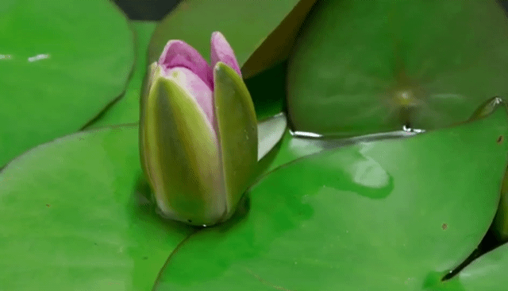
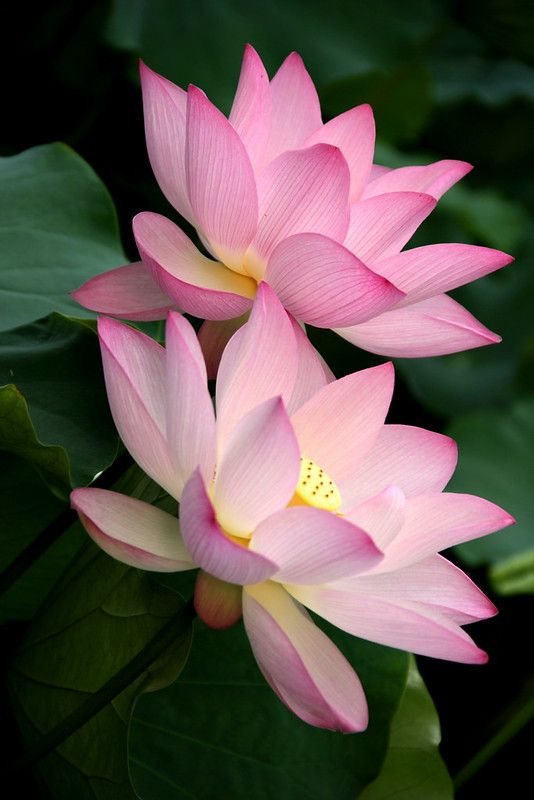
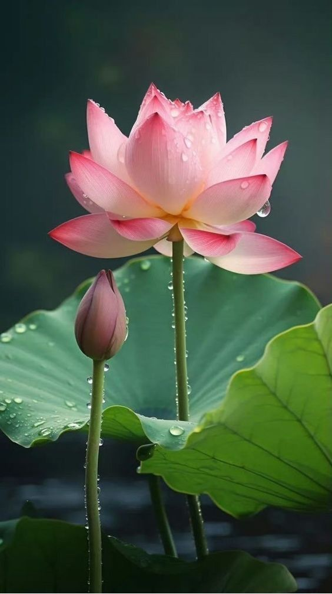
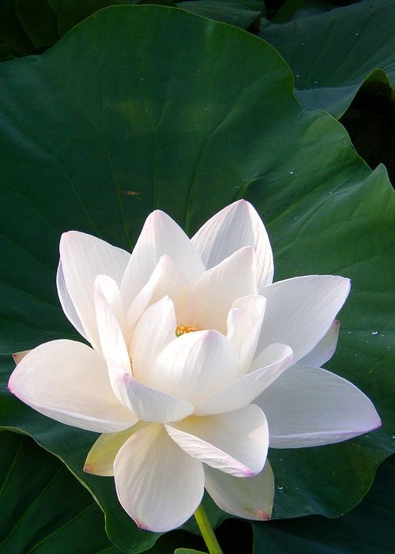

Nelumbo nucifera (aka. Lotus flower) is a powerful symbol of beauty, purity, and spiritual awakening, often rising gracefully from muddy waters to bloom in radiant shades of pink or white. Revered in many cultures and religions, especially in Asia, it represents resilience and the idea of rising above challenges. With its broad, floating leaves and striking, symmetrical blossoms, the lotus thrives in still, shallow waters. Its ability to emerge clean and unblemished from murky ponds has inspired countless stories, artworks, and philosophies throughout history.


